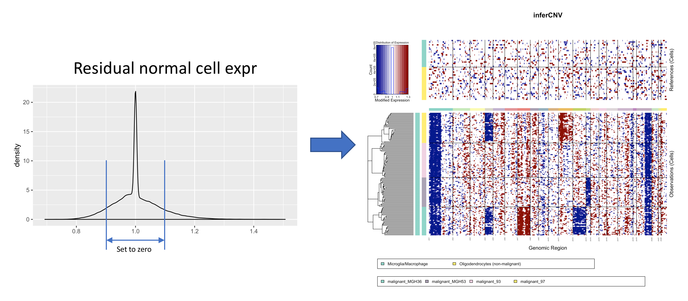
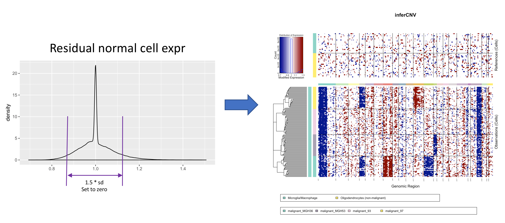
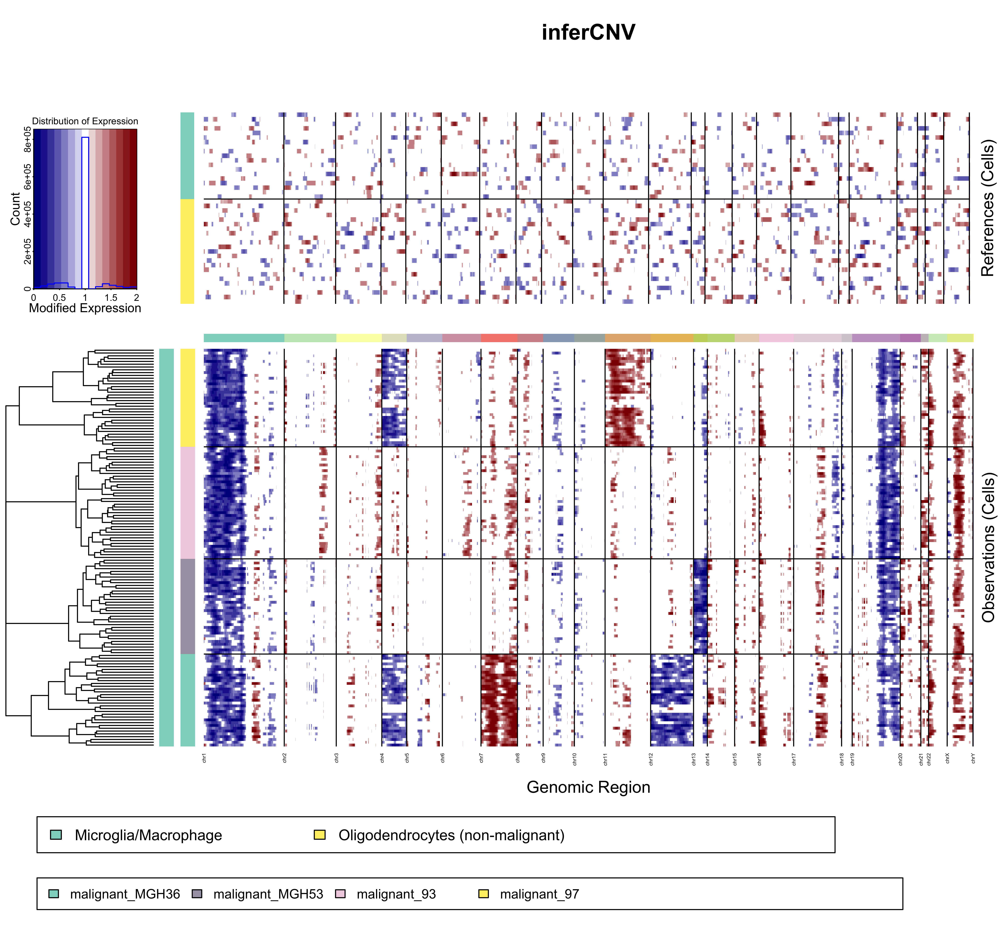

inferCNV使用流程
inferCNV简介
inferCNV可以被用于单细胞RNA-seq数据识别大规模的染色体拷贝数变异，如：整个染色体或是大染色体片段的获得和缺失。主要是通过与一组参考“正常”细胞相比，探索肿瘤基因组不同位置基因表达强度来实现。生成的热图可以显示每条染色体的相对表达强度。通过与正常细胞相比，很容易看出肿瘤基因组哪些区域表达过于丰富或者不够丰富。
inferCNV安装
安装inferCNV需要同时安装JAGS package.
if (!requireNamespace("BiocManager", quietly = TRUE))
install.packages("BiocManager")
BiocManager::install("infercnv")
inferCNV运行
inferCNV可以通过两步进行运行：
首先需要创建一个inferCNV对象。
infercnv_obj = CreateInfercnvObject(raw_counts_matrix=system.file("extdata", "oligodendroglioma_expression_downsampled.counts.matrix.gz", package = "infercnv"),
annotations_file=system.file("extdata", "oligodendroglioma_annotations_downsampled.txt", package = "infercnv"),
delim="\t",
gene_order_file=system.file("extdata", "gencode_downsampled.EXAMPLE_ONLY_DONT_REUSE.txt", package = "infercnv"), ref_group_names=c("Microglia/Macrophage","Oligodendrocytes (non-malignant)"))
需要的输入文件有三个：
-
Raw Counts Matrix for Genes x Cells
inferCNV可以兼容来自
smart-seq2和10x genmoic等单细胞测序平台的数据，count矩阵必须行是基因，列是细胞的矩阵，格式如下：MGH54_P16_F12 MGH54_P12_C10 MGH54_P11_C11 MGH54_P15_D06 … A2M 0 0 0 0 … AAAS 0 37 30 21 … AACS 0 0 0 0 … AADAT 0 0 0 0 … … … … … … … -
Sample annotation file
样本注释文件包括两列：第一列是细胞名字，第二列是细胞的类型，以
tab分割。如果已知正常细胞的类型，可以给出具体的细胞类型，并且，在进行计算时，每一种细胞类型都将作为单独的正常细胞存在，而不是整合成一个正常的类型。同样，如果并不能详细的获得正常细胞的类型，可以将其统称为normal，作为统一的正常细胞类型。对于恶性细胞需要标记为malignant_{patient}的形式。使它们在聚类时可以聚在一起。MGH54_P2_C12 Microglia/Macrophage MGH36_P6_F03 Microglia/Macrophage MGH54_P16_F12 Oligodendrocytes (non-malignant) MGH54_P12_C10 Oligodendrocytes (non-malignant) MGH36_P1_B02 malignant_MGH36 MGH36_P1_H10 malignant_MGH36 -
Gene ordering file
Gene ordering文件提供每个基因的染色体位置信息，使用
tab分割。要分析的count矩阵中的每个基因都应该在这个基因排序文件中提供相应的基因名称和位置信息。WASH7P chr1 14363 29806 LINC00115 chr1 761586 762902 NOC2L chr1 879584 894689 MIR200A chr1 1103243 1103332 SDF4 chr1 1152288 1167411 UBE2J2 chr1 1189289 1209265
注意，如果没有参考的正常细胞，可以设置
ref_group_names=NULL，使用所有细胞的平均表达作为参考基线。此外，inferCNV默认已经去除低质量的细胞，如果要进一步进行最大或最小count值的过滤，可以设置
min_max_counts_per_cell=c(1e5,1e6)
在创建infercnv_obj对象之后，使用内置的infercnv::run()方法运行标准的infercnv过程：
infercnv_obj = infercnv::run(infercnv_obj,
cutoff=1, # cutoff=1 works well for Smart-seq2, and cutoff=0.1 works well for 10x Genomics
out_dir=tempfile(),
cluster_by_groups=TRUE,
denoise=TRUE,
HMM=TRUE)
cutoff决定了哪个基因可以被用于infercnv分析
cluster_by_groups可以根据细胞注释文件对细胞进行聚类
inferCNV降噪处理
降噪处理可以降低噪声对与表达的影响，同时保留在肿瘤细胞中的表达
-
使用固定阈值过滤
可以使用
noise_filter参数设定一个特定的偏离均值的阈值infercnv_obj = infercnv::run(infercnv_obj, cutoff=1, # cutoff=1 works well for Smart-seq2, and cutoff=0.1 works well for 10x Genomics out_dir=out_dir, cluster_by_groups=T, plot_steps=F, denoise=T, ## de noise noise_filter=0.1 ## hard thresholds )
-
使用动态阈值过滤
默认情况下，用于去噪的硬边界是基于剩余的正常表达值的标准差来计算的。这个阈值可以使用
sd_amplifier参数进行调整。例如，我们可以使用1.5 *标准差的过滤如下:infercnv_obj = infercnv::run(infercnv_obj, cutoff=1, # cutoff=1 works well for Smart-seq2, and cutoff=0.1 works well for 10x Genomics out_dir=out_dir, cluster_by_groups=T, plot_steps=F, denoise=T, sd_amplifier=1.5 ## set dynamic thresholding based on the standard deviation value. )

基于HMM的CNV预测方法
inferCNV当前支持两种基于HMM的CNV预测方法（i3和i6）。两种方法可以通过infercnv::run()函数中的HMM_type参数进行设定，默认为HMM_type='i6
两种方法的操作对象都是对CreateInfercnvObject()函数计算出来的infercnv对象进行处理。
i3 HMM: 包括CNV的三种状态： 拷贝数缺失（deletion）、拷贝数中立（neutral）、拷贝数扩增（amplification ）
i6 HMM: 包括更加精细定义六种CNV改变状态：
- 0x: complete loss
- 0.5x: loss of one copy
- 1x: neutral
- 1.5x: addition of one copy
- 2x: addition of two copies
- 3x: essentially a placeholder for >2x copies but modeled as 3x
CNV region预测报告
CNV的推断预测结果包含在以下文件夹中：
-
HMM_CNV_predictions.*.pred_cnv_regions.dat：包含CNV区域坐标、状态分配和细胞分组的摘要信息。cell_group_name cnv_name state chr start end malignant_MGH36.malignant_MGH36_s1 chr1-region_2 0.5 chr1 3696784 144612683 malignant_MGH36.malignant_MGH36_s1 chr1-region_4 1.5 chr1 151336778 156213123 malignant_MGH36.malignant_MGH36_s1 chr3-region_7 1.5 chr3 3168600 10285427 malignant_MGH36.malignant_MGH36_s1 chr3-region_9 1.5 chr3 45429998 49460186 malignant_MGH36.malignant_MGH36_s1 chr4-region_11 0.5 chr4 53179 187134610 malignant_MGH36.malignant_MGH36_s1 chr5-region_13 1.5 chr5 134181370 177037348 -
HMM_CNV_predictions.*.cell_groupings: 提供肿瘤subcluster和细胞成员的对应关系cell_group_name cell malignant_MGH36.malignant_MGH36_s1 MGH36_P3_E06 malignant_MGH36.malignant_MGH36_s1 MGH36_P10_E07 malignant_MGH36.malignant_MGH36_s1 MGH36_P3_C04 malignant_MGH36.malignant_MGH36_s1 MGH36_P3_A09 malignant_MGH36.malignant_MGH36_s1 MGH36_P2_A08 malignant_MGH36.malignant_MGH36_s1 MGH36_P10_B08 malignant_MGH36.malignant_MGH36_s1 MGH36_P8_H09 ... -
HMM_CNV_predictions.*.pred_cnv_genes.dat: 包含每个细胞、每个基因的CNV状态分级情况cell_group_name gene_region_name state gene chr start end malignant_MGH36.malignant_MGH36_s1 chr1-region_2 0.5 DFFB chr1 3696784 3713068 malignant_MGH36.malignant_MGH36_s1 chr1-region_2 0.5 C1orf174 chr1 3773845 3801993 malignant_MGH36.malignant_MGH36_s1 chr1-region_2 0.5 RPL22 chr1 3805689 3816857 malignant_MGH36.malignant_MGH36_s1 chr1-region_2 0.5 ICMT chr1 6241329 6269449 malignant_MGH36.malignant_MGH36_s1 chr1-region_2 0.5 ACOT7 chr1 6281253 6296032 malignant_MGH36.malignant_MGH36_s1 chr1-region_2 0.5 NOL9 chr1 6324329 6454451 malignant_MGH36.malignant_MGH36_s1 chr1-region_2 0.5 KLHL21 chr1 6581407 6614595 ... -
HMM_CNV_predictions.*.genes_used.dat: 提供在分析中使用的基因列表
推断肿瘤subclusters
通过设置 infercnv::run(analysis_mode='subclusters'), inferCNV会试着根据CNV改变的模式对细胞进行聚类。
在inferCNV中，使用的聚类方式为层次聚类（hierarchical clustering），根据层次聚类树划分不同的subcluster。有三个参数可以影响层次聚类划分的结果：
infercnv::run(hclust_method='ward.D2')：层次聚类使用的方法，支持所有的hclust方法。目前作者认为ward.D2的效果最好infercnv::run(tumor_subcluster_partition_method='random_trees')：划分层次聚类树的方法。可选的方法为：random_trees,qnorminfercnv::run(tumor_subcluster_pval=0.05):用于确定分层树中的切割点的设置
inferCNV的输出
通过inferCNV的run函数运行后，会产生一些输出文件：
infercnv.preliminary.png:初步的inferCNV图像infercnv.png：采用去噪方法，生成最终的热图infercnv.references.txt：“正常”细胞矩阵数据值infercnv.observations.txt：肿瘤细胞数据值infercnv.observation_groupings.txt：聚类后的肿瘤细胞关系infercnv.observations_dendrogram.txt：肿瘤细胞聚类树状结构图
解读inferCNV图像
通过inferCNV会得到类似于下面的聚类图：

正常细胞的表达值绘制在顶部的热图中，肿瘤细胞绘制在底部的热图中，基因从左到右排列在染色体上。将正常的细胞表达数据从肿瘤细胞表达数据中减去，产生差异，其中染色体区域扩增为红色块，染色体区域缺失为蓝色块。